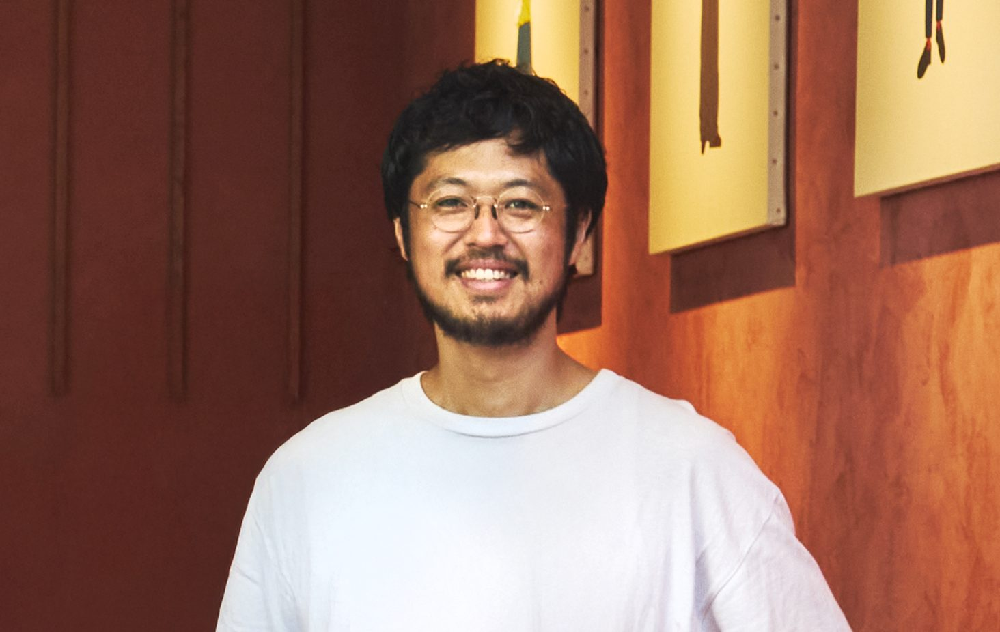

About
a.d.pは、建築と内装の設計・監理を行う一級建築士事務所です。
坂田 裕貴Yuki Sakata
建築家／一級建築士
- 1986福岡県生まれ
- 2006ICS College of Arts
- 2009設計事務所勤務
- 2011フリーランス活動開始・HandiHouse project 共同創業
- 2018株式会社 HandiHouse project 設立
- 2022株式会社 a.d.p 設立

メンバー
- 高橋 万里江
- 安部 くるみ
- 近森 麦人
- 田部 堅大
事務所概要
| 名称 | 一級建築士事務所 a.d.p（アデペ）／ 株式会社a.d.p |
|---|---|
| 代表 | 坂田 裕貴（一級建築士 大臣登録第372820号） |
| 所在地 | TOKYO OFFICE：東京都目黒区青葉台3-18-10 401 |
| 登録 | 一級建築士事務所 神奈川県知事登録 第18366号 |
| 建設業許可 | 神奈川県知事許可（般-6）第92224号 |
| 設立 | 2022年1月 |
掲載メディア
商店建築 ／ カフェの設計学（学芸出版社） ／ XXI（トルコ） ／ TOKOSIE ／ TECTURE MAG ／ architecturephoto.net